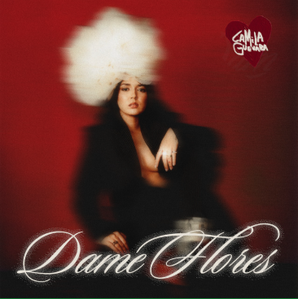
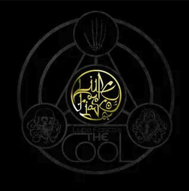
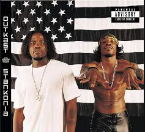
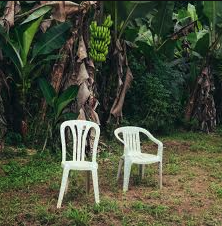

Justin's Favorite Albums
The albums that have had the greatest impact on my life
In reality, there are probably way too many albums for me to highlight all of them but these are just a few that have inspired me.
 The Miseducation of Lauryn Hill
1998
The Miseducation of Lauryn Hill
1998
Hip-Hop/R&B
77:39
After her historic albeit difficult run with The Fugees and starring in movies like The Sister Act II, Lauryn Hill released her debut album in 1998. The album is structured like an elementary school class on love. Throughout the album, Lauryn Hill flips between Hip-Hop to R&B to funk to reggae discussing the trappings of fame and love with incredible grace and precision. This album is timeless to me and even coming on 30 years on, it still continues to sound fresh.
Listen to the Album Here

Dame Flores
2025
Alternative/Indie/Latin
35:01
After losing three of her closest family members, Camila Guevara dove headfirst into her debut album. The granddaughter of both legendary Cuban musician Pablo Milanés and revolutionary Che Guevara, Camila carves her own lane on this album. Dealing head-on with heartbreak, she takes the listener on a journey of learning to trust your intuition and pick yourself up from the ground. With her uncanny sense for musical variety even from one moment to the next - this might be the best album I’ve listened to this year.
Listen to the Album Here
 Songs in the Key of Life
1976
Songs in the Key of Life
1976
Soul/R&B
85:43
How much can I even say about this album? This album is all about love and it oozes out from every corner. It asks: How can we create a more loving society? How can we love our history without being honest about all of its ugly? How can we show love to our pioneers? How can you love someone for a lifetime? How can you welcome a child into the world with love? How can you love on such a broken planet?
Listen to the Album Here

The Cool
2007
Hip-Hop/Alternative
70:56
Lupe Fiasco is one of the most important artists to me in my development as an artist and as a person. As ridiculous as it might sound, he showed that it was okay to be a Black nerd and be an incredible rapper. The mid-2000s were truly a different time. Across 77 minutes, he weaves in and out of a story about the hood’s and the culture’s love of what is cool and the dark places it can lead us to. This album also has some of my favorite songs of all time on it in “Paris, Tokyo”, "Superstar", and “Hip-Hop Saved My Life”.
Listen to the Album Here

Stankonia
2000
Hip-Hop/Rap
73:07
A non-stop ride. By 2000, OutKast had already established themselves as one of the most creative acts in music as a whole. On Stankonia, they reach a new level. On “B.O.B." they go layer-crazy adding elements to the music just before it becomes all-consuming, perfectly encapsulating the album. Stankonia deepened Outkast’s boundary-pushing and expanded how Hip-Hop could sound and what you could make songs about (I mean, a global smash about apologizing to your ex’s mom?). I'll never get off the Stankonia Express.
Listen to the Album Here

Debí Tirar Más Fotos
2025
Reggaeton/Alternative
62:01
I was an early Bad Bunny fan. Even when he was brash and unrefined, I knew there was something more there. He never felt satisfied with the boundaries most of his peers defined themselves in and whenever he had a chance he would experiment with rock , boleros, salsa and anything else he could get his hands on. This album is the peak of that journey. On DtMF, Bad Bunny makes a proclamation about loving and leaving home, fighting for liberation, loving your friends and family, and of course, perreo. He’s really one of us.
Listen to the Album Here
Hip-Hop/R&B 77:39
After her historic albeit difficult run with The Fugees and starring in movies like The Sister Act II, Lauryn Hill released her debut album in 1998. The album is structured like an elementary school class on love. Throughout the album, Lauryn Hill flips between Hip-Hop to R&B to funk to reggae discussing the trappings of fame and love with incredible grace and precision. This album is timeless to me and even coming on 30 years on, it still continues to sound fresh.
Listen to the Album HereAlternative/Indie/Latin 35:01
After losing three of her closest family members, Camila Guevara dove headfirst into her debut album. The granddaughter of both legendary Cuban musician Pablo Milanés and revolutionary Che Guevara, Camila carves her own lane on this album. Dealing head-on with heartbreak, she takes the listener on a journey of learning to trust your intuition and pick yourself up from the ground. With her uncanny sense for musical variety even from one moment to the next - this might be the best album I’ve listened to this year.
Listen to the Album Here
Soul/R&B 85:43
How much can I even say about this album? This album is all about love and it oozes out from every corner. It asks: How can we create a more loving society? How can we love our history without being honest about all of its ugly? How can we show love to our pioneers? How can you love someone for a lifetime? How can you welcome a child into the world with love? How can you love on such a broken planet?
Listen to the Album HereHip-Hop/Alternative 70:56
Lupe Fiasco is one of the most important artists to me in my development as an artist and as a person. As ridiculous as it might sound, he showed that it was okay to be a Black nerd and be an incredible rapper. The mid-2000s were truly a different time. Across 77 minutes, he weaves in and out of a story about the hood’s and the culture’s love of what is cool and the dark places it can lead us to. This album also has some of my favorite songs of all time on it in “Paris, Tokyo”, "Superstar", and “Hip-Hop Saved My Life”.
Listen to the Album HereHip-Hop/Rap 73:07
A non-stop ride. By 2000, OutKast had already established themselves as one of the most creative acts in music as a whole. On Stankonia, they reach a new level. On “B.O.B." they go layer-crazy adding elements to the music just before it becomes all-consuming, perfectly encapsulating the album. Stankonia deepened Outkast’s boundary-pushing and expanded how Hip-Hop could sound and what you could make songs about (I mean, a global smash about apologizing to your ex’s mom?). I'll never get off the Stankonia Express.
Listen to the Album HereReggaeton/Alternative 62:01
I was an early Bad Bunny fan. Even when he was brash and unrefined, I knew there was something more there. He never felt satisfied with the boundaries most of his peers defined themselves in and whenever he had a chance he would experiment with rock , boleros, salsa and anything else he could get his hands on. This album is the peak of that journey. On DtMF, Bad Bunny makes a proclamation about loving and leaving home, fighting for liberation, loving your friends and family, and of course, perreo. He’s really one of us.
Listen to the Album Here